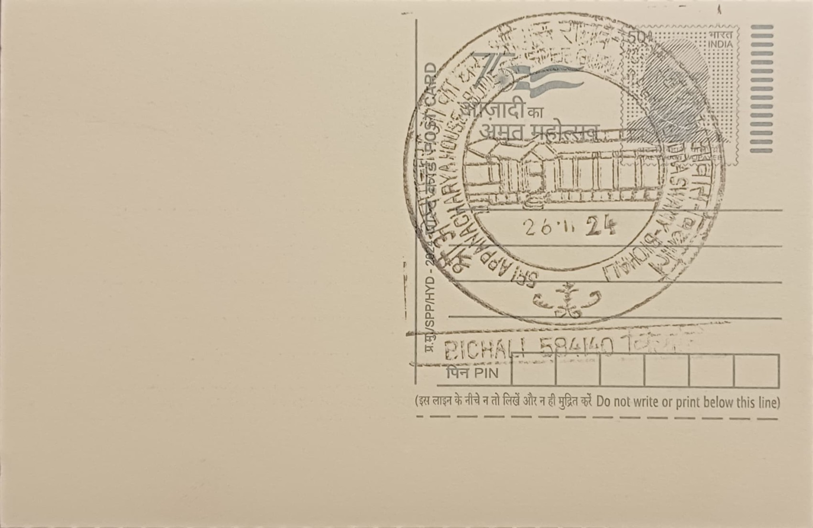

Sri Appannacharya Swamiji's House - Abode of Sri Guru Raghavendra Swami
ಶ್ರೀ ಅಪ್ಪಣ್ಣಾಚಾರ್ಯ ಸ್ವಾಮೀಜಿಯ ಮನೆ - ಶ್ರೀ ಗುರು ರಾಘವೇಂದ್ರ ಸ್ವಾಮಿಯ ನೆಲೆ


Bichali, a village on the banks of the Tungabhadra river in Raichur taluk, was known by several older names, including Gillesugur, Bhikshalaya, Bichali Japadakatte, and Anu Mantralaya, the last epithet reflecting its later status as a lesser Mantralaya in its own right. The site's significance traces to Appannacharya, a Madhwa scholar and devoted disciple of Guru Raghavendra Swami, who was born in the village and whose family home became the saint's residence for an extended period. The name Japadakatte, by which the place was also known, refers to the raised platform where Raghavendra Swami is believed to have performed his japa, or repeated recitation of mantras, during his stay.
The house holds a distinct place among sites associated with Raghavendra Swami because it was not merely visited but inhabited by the saint for a sustained period while he engaged in intensive penance, scriptural composition, and teaching. Within the Dvaita Vedanta Madhva tradition, residences of this kind that sheltered a revered guru are themselves treated as consecrated ground, and Appannacharya's house is regarded by Madhwa followers as second in importance only to the Brindavana at Mantralayam itself. Its status rests on continuous local tradition and the presence of a dedicated Brindavana built on the spot rather than on any separate canonical scripture.
Historical accounts place Raghavendra Swami's residence at Bichali between approximately 1658-59 and 1671, a span of roughly thirteen years, during which he is said to have conducted the daily worship of Sri Moola Rama Devaru, an idol of Rama he carried with him, in the central hall of the house, the same room in which he reportedly slept. Tradition further credits this period with the composition of his commentary known as the Chandrika, portions of which are said to have been written at the Japadakatte platform. Appannacharya, for his part, is remembered for establishing a gurukula, a traditional residential school for Vedic and Vedantic studies, at the site, extending the house's role from private dwelling to a center of learning.
Following Raghavendra Swami's entry into his Brindavana at Mantralayam in 1671, Appannacharya installed a monolithic stone Brindavana at Bichali to commemorate the thirteen years his guru had spent there, converting the house's surroundings into an open-air shrine that has since drawn pilgrims making circuits of Raghavendra Swami-associated sites across the Raichur-Mantralayam region. A notable setback in the site's modern history came with the severe Tungabhadra floods of 2009, which caused substantial damage to the house and its associated structures, given the village's low-lying location on the riverbank.
Bichali today functions as a modest but recognized halt on the broader pilgrim circuit linking Mantralayam with the scattered sites of Raghavendra Swami's early life and wandering, with local mathas and devotee trusts overseeing the upkeep of the house and its Brindavana in the years since the 2009 flood damage. The post office serving the village, Bichali BO under PIN 584140 in Raichur district, registers the settlement on India's postal map chiefly because of this religious association. Pilgrims visiting Mantralayam increasingly extend their journey to Bichali to see the room where Raghavendra Swami is said to have lived and worshipped, making the house a modest but still-functioning extension of the Mantralayam pilgrimage rather than a separate, independently drawing destination.
| Date of Introduction | November 26, 2024 |
|---|---|
| Address | Branch Postmaster, |
| Bichali BO, | |
| Raichur (dt.), Karnataka - 584140. |